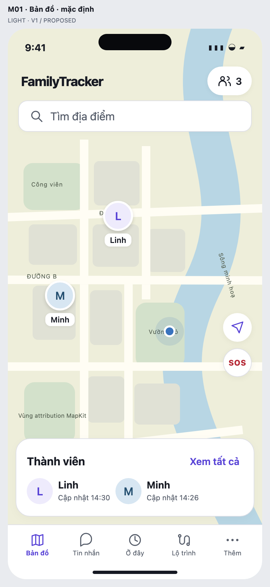
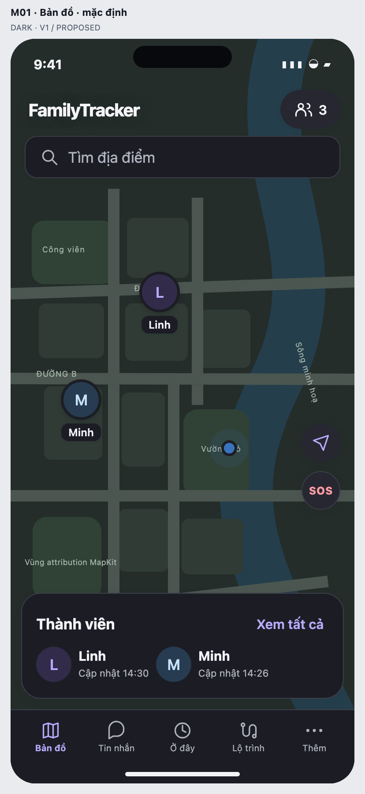

Light và Dark cùng cấu trúc. Pulse chuyển vào mục Nhà phát triển; cảnh báo mất realtime vẫn hiện theo ngữ cảnh.


Đây là mockup thiết kế, chưa triển khai. Bản đồ và dữ liệu được vẽ giả lập; không phải ảnh MapKit thật. Duyệt M01 v1 hoặc yêu cầu chỉnh vị trí, kích thước hay thứ tự thông tin. Chi tiết/member/search/theme xem trong gallery.